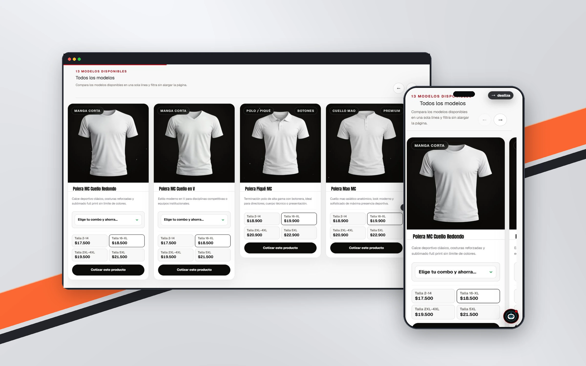
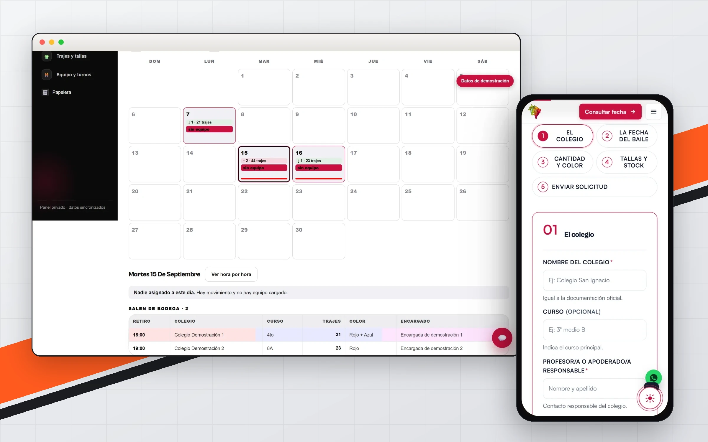
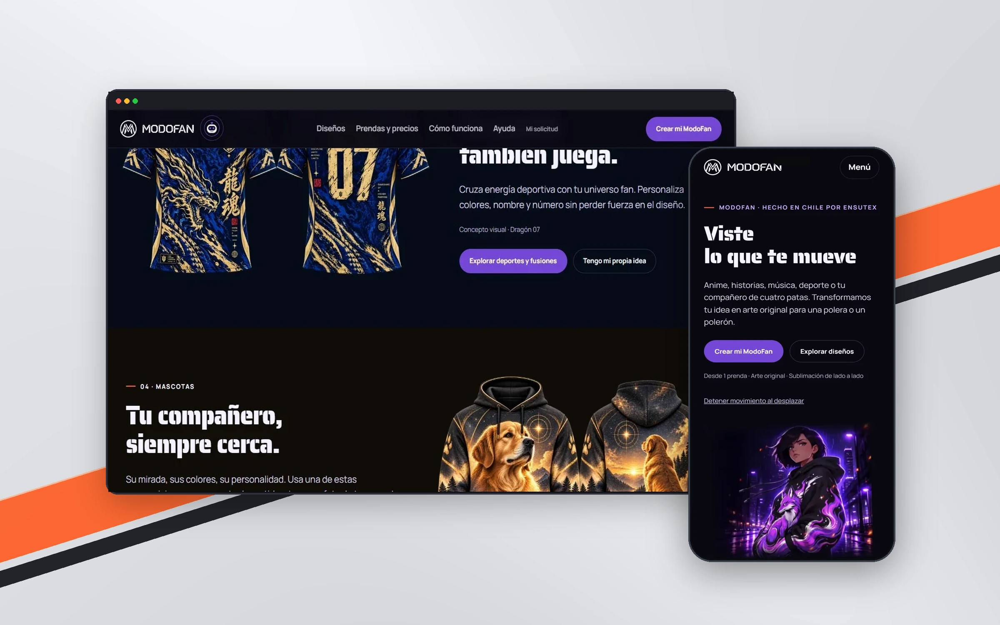
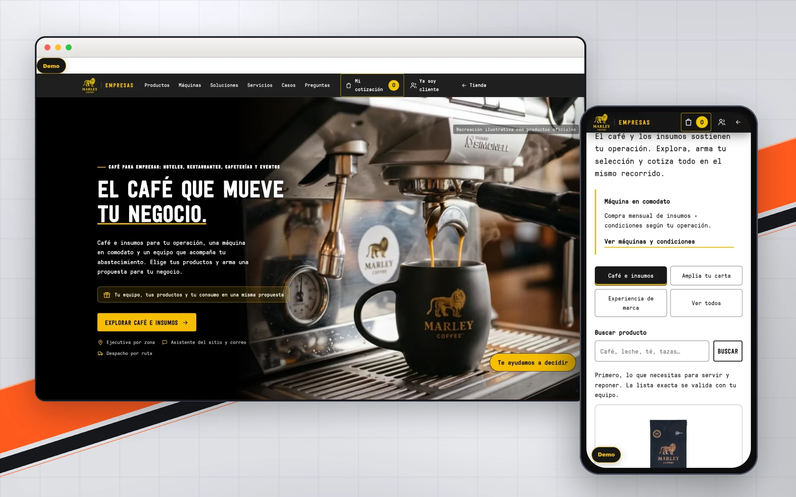

«Una cotización no empieza en el formulario»
Las dudas sobre tallas y telas frenaban las consultas. Diseñé un recorrido guiado de cuatro pasos y organicé la atención comercial.

MARKETING DIGITAL · GROWTH · CX/UX/UI · IA APLICADA
Investigo qué la motiva y qué la frena para mejorar experiencias digitales y convertir decisiones de marketing en resultados de negocio.
Ingeniería en Marketing Digital (último semestre) · Técnico titulado · Duoc UC
Santiago, Chile · «Una experiencia no termina en el clic»
01 · PROYECTOS DESTACADOS Y EVIDENCIA
Cuatro casos donde cada cifra distingue entre operación registrada, solución implementada y prototipo evaluado.
Las dudas sobre tallas y telas frenaban las consultas. Diseñé un recorrido guiado de cuatro pasos y organicé la atención comercial.

El análisis mostró que 43 de 54 entregas se hacían la víspera del evento. Diseñé una solicitud guiada y un CRM para organizar la operación.

Separé la exploración de diseños de la personalización individual para responder a necesidades distintas de fanáticos e instituciones.

Propuesta académica que diferencia HORECA, oficinas y conveniencia, que lleva el diagnóstico comercial a la experiencia digital y al CRM.

02 · MÉTODO DE TRABAJO · FLYWHEEL DE 06 ETAPAS
Un ciclo continuo: escuchar a las personas, priorizar con datos y medir qué cambió.
01 / 06 · DIAGNÓSTICO HUMANO
Detectar necesidades y dudas reales de compradores y del equipo.
02 / 06 · EVIDENCIA Y DATOS
Contrastar conductas, recorridos y registros operativos.
03 / 06 · FOCO COMERCIAL
Elegir qué resolver primero por impacto comercial y factibilidad.
04 / 06 · ARQUITECTURA UX/CX
Convertir hallazgos en recorridos guiados e interfaces claras.
05 / 06 · MENSAJE Y CONTENIDO
Responder al cliente sin rodeos en cada punto de contacto.
06 / 06 · OPTIMIZACIÓN CONTINUA
Comprobar qué cambió con analítica, usabilidad y aprender.
«Detrás del clic hay una persona. Entenderla es el primer paso para mejorar una experiencia y generar valor para el negocio.»
03 · PERFIL PROFESIONAL E IA APLICADA
Combino análisis comercial, UX/CX y analítica para detectar fricciones y diseñar soluciones. Uso agentes de IA para investigar, prototipar y automatizar con reglas de negocio y validación humana.
PRESENTACIÓN EN VIDEO
Una presentación breve: qué hago, cómo lo hago y en qué proyectos lo he aplicado.
«Para mí, el marketing va mucho más allá de hacer buenas campañas: se trata de comprender a las personas, identificar oportunidades y desarrollar estrategias que generan resultados reales.»
«Y esa es justamente la forma en la que me gusta trabajar: conectando creatividad, tecnología y análisis para transformar ideas en soluciones.»
«Soy Carlos Vargas, técnico en marketing digital y estudiante del último semestre de ingeniería en marketing digital en Duoc UC.»
«En proyectos como Ensutex y Sol y Tierra he combinado investigación, experiencia de usuario e inteligencia artificial para desarrollar soluciones digitales.»
«Me entusiasma la idea de seguir aprendiendo, colaborar y enfrentar nuevos desafíos. Si quieres ver cómo llevo esto a la práctica y conocer mis proyectos, te invito a visitar mi LinkedIn y mi portafolio.»
01 · Growth y estrategia Paid media, inbound marketing, funnels de conversión y SEO/AEO/GEO orientados a adquisición y rentabilidad comercial.Google Ads · Meta Ads · Funnels AARRR · Inbound
02 · CX / UX / UI Investigación con personas, mapas de viaje (CJM), flujos guiados y prototipado para eliminar fricciones y ordenar el servicio.UX Research · Prototipado · User Flows · Heurísticas de Nielsen
03 · Analítica y conversión Medición del comportamiento digital, embudos de cotización y optimización de conversión basada en datos reales.GA4 · Search Console · Clarity · Excel
04 · IA y automatización Orquestación de agentes especializados para investigación acelerada, prototipado de interfaces y flujos con control humano.Claude Code · Codex · Antigravity · Python · n8n
En Sol y Tierra, los registros de fechas y tallas guiaron el diseño de la solicitud y el CRM. Coordiné agentes para prototipar las vistas de gestión y audité el resultado técnico en móvil y escritorio antes de su puesta en marcha.
04 · DETRÁS DEL CLIC — IDEAS EN LINKEDIN
Comparto análisis de Growth, experiencia del cliente e IA aplicada. Cada reflexión se relaciona con decisiones que explico en estos proyectos.
Miramos CTR o CAC en una planilla, pero la persona al teléfono solo busca claridad y confianza antes de pagar.
Cuando un servicio colapsa en la entrega, inyectar pauta no escala las ventas: escala el cuello de botella operativo.
Distintos compradores tienen distintas urgencias. Separar rutas por motivación evita perder a quien ya sabe qué busca.
Publico análisis sobre marketing digital, experiencia de cliente (CX) e IA aplicada en mi serie «Detrás del clic».
Ver publicaciones en LinkedIn ↗05 · CONTACTO
Conversemos sobre Growth, CX/UX/UI, analítica e IA aplicada. Disponible en Santiago o modalidad remota/flexible.
Carlos Vargas · Santiago, Chile